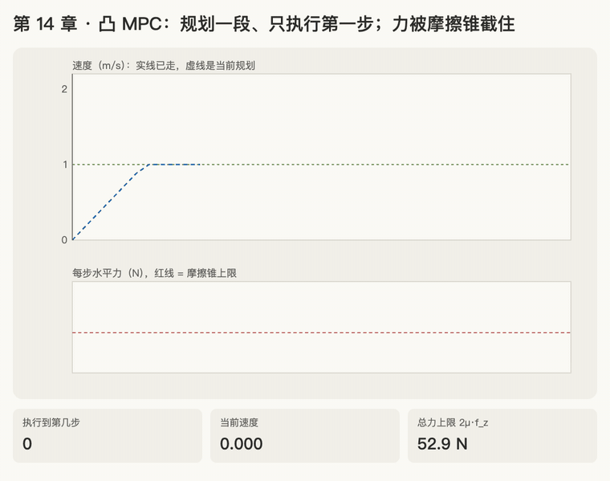

第 14 章 · 单刚体凸 MPC 与 WBC：四足怎么「算」出每只脚该推多大力
本章回答：MIT Cheetah 这类四足的经典控制器，每一刻在优化什么？摩擦锥是什么，它怎么限制了能跑多快？「只执行第一步、然后重新规划」有什么好处？算出来的脚底力怎么变成关节力矩？
讲解日期：2026-11-20 · 上一章：第 13 章 线性倒立摆与 ZMP · 下一章：第 15 章 iLQR 与 MPPI
对应原文：Kim et al. 2019（robot-motion-rl/materials/text/kim-wbic-mpc-1909.06586.txtL102：MPC 30 Hz、WBIC 500 Hz；§III MPC L172–L199，三个简化与摩擦锥约束 L192–L199；§IV WBIC L257–L277）；运控细化笔记 §5.1、§5.4
本章缩写：MPC = Model Predictive Control（模型 / 预测 / 控制）；QP = Quadratic Program（二次 / 规划）；GRF = Ground Reaction Force（地面 / 反作用 / 力）；μ：摩擦系数（读 "mu"）；WBC = Whole-Body Control（全身 / 控制）；WBIC = Whole-Body Impulse Control（全身 / 冲量 / 控制，Kim 2019 的 WBC 变体）；J：雅可比矩阵（关节速度 → 脚的速度）；Jᵀ：它的转置（脚的力 → 关节力矩）。全部缩写见 附录 · 缩写与术语表
讲解
第一步：把四足压缩成一个刚体（2026-11-20）
类比：指挥一张被四个人抬着的桌子，你只关心桌面怎么动，再告诉每个人往哪推。
四足有 12 个关节，直接优化太难。凸 MPC 把机身看成一个刚体，腿的质量忽略，只问：每只着地脚推地面的力 \(f_i\) 是多少？
（p：机身质心位置；还有一条转动方程，本章略。）Kim 2019 §III（L192–L194）做了三个简化：横滚和俯仰角很小、着地脚位置按计划给定、转动惯量近似不变。这样动力学对 \(f_i\) 是线性的，优化就是凸的（QP），每次几毫秒就能解完。
一句话：机身当一块砖，只优化着地脚的推力，问题就变成凸的。
第二步：摩擦锥：脚只能这么推（2026-11-20）
类比：在冰上推墙，推得太斜脚就打滑。
地面反力 GRF 有两条约束（L193–L199）：
- 竖直分量 \(f_z \ge 0\)（地面只能推不能拉，和第 13 章的 ZMP 同理）；
- 水平分量 \(|f_x| \le \mu f_z\)（推得太斜就打滑，「摩擦锥」线性化成「金字塔」）。
例子：质量 9 kg（接近 Mini Cheetah），对角两脚着地（trot），匀速时每脚 \(f_z = 9 \times 9.8 / 2 =\) 44.1 N。μ = 0.6 时每脚 \(|f_x| \le\) 26.5 N。所有着地脚都用满摩擦，最大水平加速度 \(= \mu g =\) 5.88 m/s²，和质量无关。想更快地加速，只能等更多脚着地或换更粗糙的地面。
一句话：脚的推力被锁在摩擦锥里，最大加速度就是 μg。
第三步：滚动优化：规划一段，只执行第一步（2026-11-20）
类比：开车看前面 100 米规划，但每一秒都重新看一次。
每个控制周期，MPC 解一个优化：「接下来 10 步，每步每只脚推多大力，能让机身速度最贴近指令，同时力不太大、不出摩擦锥？」解出 10 步的计划，只执行第一步，下一个周期在新状态上再解一次。Kim 2019 的 MPC 跑 30 Hz（L102）。
例子（一维、编的）：从静止加速到 1 m/s，每步 0.03 s，看 10 步。速度：
| 步 | 0 | 1 | 2 | 3 | 4 | 5 | 6 | 7 |
|---|---|---|---|---|---|---|---|---|
| v（m/s） | 0 | 0.176 | 0.353 | 0.529 | 0.706 | 0.882 | 0.991 | 0.999 |
前 5 步每步只涨 0.176 = 5.88 × 0.03：力被摩擦锥顶住了；快到目标时 MPC 自己收力，平稳停在 1.0。
和 RL 的对比：MPC 每一刻都在线解一个优化（要模型、要算力，但不用训练）；RL 策略把这件事离线学成一个网络（要训练，但部署时一次前向）。第 15 章的 iLQR / MPPI 是更一般的在线优化。
一句话：每次规划一段，只做第一步，下次重来；所以能随时修正。
第四步：WBC：把脚底力变成关节力矩（2026-11-20）
类比：知道了「这只脚要往下推 44 N」，还得换算成「膝盖、髋关节各出多大力矩」。
着地脚上，关节力矩和脚底力的关系是
J 是这条腿的雅可比（关节转一点，脚移动多少），转置后把力换算成力矩。
例子（两关节腿，数字是编的）：\(J = \begin{bmatrix}0 & -0.4\\ 0.3 & 0.2\end{bmatrix}\)，脚要往上推 \(f = (0, 44.1)\) N：
完整的 WBC / WBIC（L257–L277）还要同时管机身姿态、摆动腿的轨迹、关节限位，按优先级解一个更大的 QP，跑 500 Hz，输出关节目标位置、速度和前馈力矩，交给第 1 章的 PD。
整套经典栈：MPC（30 Hz，算 GRF）→ WBC（500 Hz，算关节指令）→ PD（1 kHz 以上）。第 1 章 RL 策略占的就是 MPC + WBC 那两层的位置。
一句话：τ = Jᵀf 把脚底力换成关节力矩；WBC 在此基础上按优先级照顾全身。
动画演示：滚动优化与摩擦锥

可交互版：animations/14-convex-mpc.html（滑块：摩擦系数 μ、目标速度、规划长度）。
怎么看：
- 上图实线是已经走过的速度，虚线是当前这一刻规划的未来 10 步，只有第一步会被执行（第三步）。
- 下图柱子是每步用的水平力，红色虚线是摩擦锥上限 ±μ·f_z（第二步）；顶到红线时速度按 μg 直线上升。
- 拖 μ：μ 变小时加速变慢，所需时间变长。
练习与作答记录
题 1（第二步）：质量 12 kg 的四足，四脚同时着地，μ = 0.8。每脚的 f_z 和最大 |f_x| 是多少？最大水平加速度呢？
作答：（待作答）
题 2（第三步）：规划长度 N 太短（比如 1 步）和太长（比如 100 步）各会有什么问题？
作答：（待作答）
题 3（第四步）：\(J = \begin{bmatrix}0.2 & 0\\ 0 & 0.5\end{bmatrix}\)，\(f = (10, 40)\) N，算 τ = Jᵀf。
作答：（待作答）
口诀
机身当砖头，只算每只脚推多大，问题变凸；
只推不拉、不能太斜，摩擦锥把加速度锁在 μg；
看一段、走一步、再重看，三十赫兹滚着解；
力乘雅可比转置变力矩，WBC 五百赫兹顾全身。
本章复习卡片
M27（摩擦锥 |f_x| ≤ μf_z、f_z ≥ 0，最大加速度 μg；单刚体凸 MPC 的简化）、M28（滚动优化只执行第一步；τ = Jᵀf；MPC 30 Hz / WBC 500 Hz / PD 的分层）
附录 · 延伸阅读
留给以后深入学习用，不影响本章主线。★ 是建议先读的。
推荐阅读
| 读什么 | 读哪里 | 读它为了什么 |
|---|---|---|
| ★ Kim et al. 2019 | robot-motion-rl/materials/text/kim-wbic-mpc-1909.06586.txt §II（L110）、§III（L172–L199）、§IV（L257–L277） |
凸 MPC + WBIC 的完整架构与公式 |
| ★ 运控细化笔记 §5 | robot-system-architecture/notes/02-motion-control-deep-dive.md §5.1–§5.5 |
状态估计、简化模型、WBC 分层 QP、模型路线优缺点 |
| Di Carlo et al. 2018（Cheetah 3 凸 MPC） | 未下载（IROS 2018，MIT DSpace 下载失败） | 凸 MPC 的原始论文 |
| Modern Robotics 第 5、8 章 | robot-system-architecture/materials/text/modern-robotics-lynch-park.txt |
雅可比、静力学 τ = Jᵀf 的推导 |
| 学习计划 MC-M4 | study-plan.md | 自己写单刚体凸 MPC 让四足 trot |
数学原理
- 凸优化：目标是凸函数、约束是线性不等式时（QP），局部最优就是全局最优，求解快而可靠。
- 虚功原理：脚移动 δx = Jδq 时，力做的功 fᵀδx = fᵀJδq = (Jᵀf)ᵀδq，所以关节力矩 τ = Jᵀf。
公式清单
| 公式 | 意思 |
|---|---|
| \(m\ddot p = \sum_i f_i - mg\) | 单刚体平动 |
| $f_z \ge 0,\ | f_x |
| \(a_{max} = \mu g\) | 最大水平加速度 |
| \(\tau = J^\top f\) | 力 → 关节力矩 |
代码对照：把本章的数字用代码算一遍
用 Python + NumPy 把讲义里讲过的数算一遍，不算练习题。代码在仓库本地
robot-motion-rl/solutions/chapter-code/ch14_convex_mpc.py，配套测试tests/test_ch12_18.py，notebook 在notebooks/ch14_convex_mpc.ipynb。Mac 上直接能跑，不需要 GPU：
bash cd robot-motion-rl/solutions/chapter-code uv run python ch14_convex_mpc.py uv run pytest tests/test_ch12_18.py
讲义 ↔ 代码（质量、μ、雅可比都是编的）：
| 讲义 | 公式 | 写法 | 跑出来 |
|---|---|---|---|
| 第二步 竖直力 | mg / n | stance_normal_force(9, 2) |
44.1 N |
| 第二步 摩擦锥 | μ·f_z | max_horizontal_force(44.1, 0.6) |
26.46 N；μg = 5.88 |
| 第三步 滚动优化 | 规划 10 步、执行第 1 步 | receding_horizon(0, 1, 9, 10, 0.03, 52.92, 10) |
0、0.176、0.353 … → 1.0 |
| 第四步 WBC | Jᵀf | leg_torque(J, [0, 44.1]) |
(13.23, 8.82) |
关键几行：
lower = np.tril(np.ones((N, N))) * dt / m # v_k = v0 + Σ_{j<k} f_j·dt/m：速度对力是线性的
f = np.linalg.lstsq(A, y, rcond=None)[0] # 最小二乘：贴近目标速度，力尽量小
f = np.clip(f, -f_max, f_max) # 摩擦锥（简化：先解再截）
v += f[0] * dt / m # 只执行第一步，下一周期重解
代码里才看得到的 2 件事：
- 真正的凸 MPC 把摩擦锥写进 QP 的约束里一起解；代码为了只用 NumPy，先解无约束最小二乘再截断，结果在这个一维例子里差不多，但多维时可能不是最优。
- 两脚着地，所以每步的总水平力上限是 2 × 26.46 = 52.92 N，这才对应 μg 的加速度。
自己改一改（不影响练习答案）：
- 把目标速度改成 2 m/s，看要多少步才能到、哪几步顶在摩擦锥上。
- 把 μ 改成 0.2（冰面），看多少步才能到 1 m/s。